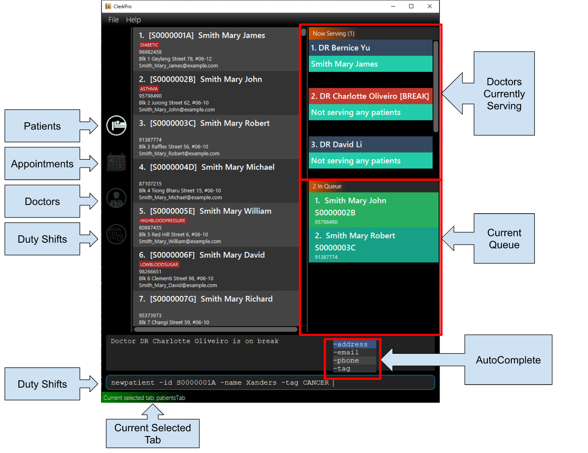

Overview
ClerkPro is a desktop application designed for ease of managing clinic’s appointments, queue and scheduling. The user interacts with it using a CLI, and it has a graphical user interface (GUI) created with JavaFX. It is written in Java, and has about 17 kLoC (cross verified at https://codetabs.com/count-loc/count-loc-online.html & http://line-count.herokuapp.com/AY1920S1-CS2103T-T09-3/main).
Summary of contributions
-
Major enhancement (Largest Contribution): Major Rework on User Interface (UI) with AutoComplete with flags.
-
What it does: Reduces the mental workload & visual fatigue of user from having to carefully type commands and double checking the typed command or the user guide for supported commands and parameters.
-
Justification: Enhances user experience (UX) design significantly because it provides optimal focus on primary tasks at hand to reduce visual and cognitive expenditure.
-
Highlights: Affects interaction against existing UI components as the traversal have to be critically handled from component to component.
-
Credits: None
-
-
Major enhancement: Reactive Search (Proposal & UX Concept)
-
What it does: Gives the user an instant preview of the search result. Prevents UI from locking up upon time-consuming processing.
-
Justification: Enhances UX significantly as user no longer have to wait for application to completely finish searching before giving new inputs.
-
Highlights: Requires understanding the process of JavaFX main application thread and plan to defer updates in a way that is not disruptive to UX of other components.
-
Credits: SakuraBlossom (Threading and Logic), Google & Chrome DevTools Console (Inspiration)
-
-
Minor enhancement: added history for the CLI that allows the user to navigate to previous commands using up/down keys.
-
Code contributed: [Link to Reposense]
-
Other contributions:
-
Project management:
-
Enhancements to existing features:
-
Community:
-
Tools:
-
Integrated a third party library (TestFX) to the project (#71)
-
-
Contributions to the User Guide
Given below are sections I contributed to the User Guide. They showcase my ability to write documentation targeting end-users. |
Quick Start
-
Ensure you have Java
11or above installed in your Computer. -
Download the latest
ClerkPro.jarhere. -
Copy the file to the folder you want to use as the home folder for ClerkPro.
-
Double-click the file to start the app. The User Interface (UI) should appear in a few seconds. For testing purposes, ClerkPro is pre-loaded with sample data to allow you to explore and familiarise with the application.

-
You may navigate through the entire UI with UP, DOWN, LEFT, RIGHT and TAB.
-
The figure below shows the layout.
 -
Type the command in the command box and press Enter to execute it.
e.g. typinghelpand pressing Enter will open the help window. Alternatively, just press F1. -
Some example commands you can try:
-
newpatient -id E0000001A -name John Doe -phone 98765432 -email johnd@example.com -address John street, block 123, #01-01: registers a patient namedJohn Doe. -
patient John Doe: searches for a patient whose name containsJohn Doe -
enqueue E0000001A: enqueues patient with reference idE0000001Ainto the queue. The patientE0000001Amust be registered. -
exit: exits the app.
-
-
Refer to [Features] for details of each command.
Do not directly edit any of the following json files: e.g. appointments.json, dutyRoster.json, patientDetails.json, staffDetails.json, preferences.json, config.json.
AutoComplete & History
-
When the command box is blank, UP & DOWN will auto-fill the command box with commands previously entered. UP gives older commands and DOWN gives newer commands.
-
Note: History is not saved in any manner after the application has closed.
-
-
When the command box is not blank, AutoComplete will come into action and tries to suggest commands that are available for whatever that has been typed. During which, you may traverse your selection of the suggestions via UP & DOWN then press ENTER to confirm selection.
Full keyboard navigable UI
-
LEFT & RIGHT changes focus between OmniPanel and TabBar when focus is not on CommandBox.
-
TAB changes focus from TabBar/OmniPanel to CommandBox and from CommandBox to TabBar.
Reactive search
-
The listing automatically filters to display only the most relevant results when searching for an existing entry.
-
When searching for a specific patient or staff, using the
patientordoctorcommand, the results are filtered based on whether the person’s reference Id, name or phone number contains the given keyword. -
When searching for a specific appointment or duty shift, using the
appointmentsorshiftscommand, the results are filtered based on whether the events involves a person whose reference Id contains the given keyword.
Contributions to the Developer Guide
Given below are sections I contributed to the Developer Guide. They showcase my ability to write technical documentation and the technical depth of my contributions to the project. |
AutoComplete
We are using Prefix Tree which is known as a Trie for AutoComplete. This gives us a worst case time complexity of O(m), where m is length of the search string. While the space complexity is O(bm), where b is number of unique characters used, m is length of longest word stored.

Aspect: Data structure to implement AutoComplete
-
Alternative 1 (current choice): Using Trie (as known as Prefix Tree).
Pros
1. Search Time Complexity Efficient: O(m), where m is length of searched word.
2. One of the most natural data structure for text prediction.Cons
1. Requires initialisation.
2. Requires rebuilding of strings. -
Alternative 2: Using ArrayList.
Pros
1. Extremely simple to implement.
Cons
1. Search Time Complexity Inefficient: O(nm), where n is number of words and m is length of searched word.
Reactive Search
The main concept behind reactive searching is to provide feedback to the user of their search results for
a given keyword as they type. However, filtering larger data sets may be a time consuming process.
Hence, the queries are processed on a separate thread to avoid blocking the UI thread.
This is achieved in two phases:
Phase 1: UI invoking a Reactive Search Request
Similar to eager evaluation, Reactive Search attempts to process commands if it does not mutate the storage. Otherwise it does a simple redirect to the tab relevant to the command.
After which, changes to the ObservableList will trigger the updateItem listener in UI. And since each graphical update is fast and can only be executed from the JavaFX main application thread, we defer each of them via Platform.run() so that the FX main application thread can execute them in order whenever it is free.
class EventListViewCell extends ListCell<Event> {
@Override
protected void updateItem(Event event, boolean empty) {
super.updateItem(event, empty);
if (empty || event == null) {
Platform.runLater(() -> setGraphic(null));
} else {
Platform.runLater(() -> setGraphic(new EventCard(event, getIndex() + 1, displayStatus).getRoot()));
}
}
}Hence, this ensures the main FX application thread is always polling for user inputs or graphical updates and handles them rapidly as they are lightweight tasks.
Instructions for Manual Testing
Given below are instructions to test the app manually.
| These instructions only provide a starting point for testers to work on; testers are expected to do more exploratory testing. |
Launch and Shutdown
-
Initial launch
-
Download the jar file and copy into an empty folder
-
Double-click the jar file
Expected: Shows the GUI with a set of sample contacts. The window size may not be optimum.
-
-
Saving window preferences
-
Resize the window to an optimum size. Move the window to a different location. Close the window.
-
Re-launch the app by double-clicking the jar file.
Expected: The most recent window size and location is retained. If window settings underpreferences.jsonis corrupted and becomes reasonably small or large, the default size of 800x600 will be used instead.
-
Editing a patient
-
Editing a patient while certain patient(s) have been searched.
-
Prerequisites: Search for an interested person via
patient [<SEARCH_KEYWORD>]then press ENTER. -
Test case:
editpatient -entry 1 -name test
Expected: All patients will be listed again with the particular patient of index found after searching has his or her name modified totest.
-
Saving data
-
Dealing with missed/corrupted data files
-
Prerequisites: Removing or Modifying files in data folder residing in same directory as
ClerkPro.jar. -
Test case: Deleting the entire data folder.
Expected: ClerkPro will attempt to access the folder. If it does not exists, the data folder will be automatically created with default settings. Other jsons besidepreferences.jsonwill be created upon modification of sample data loaded. -
Test case: Corrupting data files by modifying its entries.
Expected: ClerkPro will try its best to parse the data. If it is not valid, it must be corrupted. Therefore the application will load up with default settings and sample data.
-
Navigating in UI
-
Navigating with keyboard only
-
Test case: TAB key should change focus from the upper panels to Command Box and Command Box to Tab Bar.
Expected: When TabBar or Command Box is in focus, there should exist an indication of turquoise/blue border. -
Test case: Both UP and DOWN keys should also work even if the selected item is of the first or last index.
Expected: When UP is pressed during a selected item in the list view or Tab Bar is of first index, it should brings the selection to the last index of the list view or Tab Bar. Vice versa for the last index when selected.
-
Command Box
-
AutoComplete
-
Test case: *Any partial commands with leading spaces.
Expected: AutoComplete appears in an aligned overlay showing available commands for whatever has been typed. -
Test case:
newpatient -idwith any number of leading spaces but at least one ending space(s).
Expected: AutoComplete does not suggest any other flags because its previous word is in a flag format. -
Test case:
newpatient -id Mo-namewith any number of leading spaces but at least one ending space(s).
Expected: SinceMo-nameis not a flag, AutoComplete should suggest all unused flags but not-id. -
Test case: Lengthy Command in Command Box reaching the right-most end of the Command Box.
Expected: AutoComplete will display all suggestions visibly at the right-most end but will lose the perfect alignment since its impossible to align any further while staying visible to the user. -
Test case: UP & DOWN & ENTER while focus is still on the Command Box.
Expected: The selection should change according to UP & DOWN. While ENTER should set the selected tag into the Command Box, instead of executing the unfinished Command.
-
-
History
-
Prerequisites:
-
Some commands that has been entered regardless if it is invalid or valid.
-
Command Box is focused.
-
AutoComplete is not in action.
-
-
Test case: Press UP then DOWN
Expected: Upon UP, current text in Command Box is replaced with previously entered command. Then after, pressing DOWN displays an empty command box since the last text that was in the Command Box is not entered and thus not part of history.
-